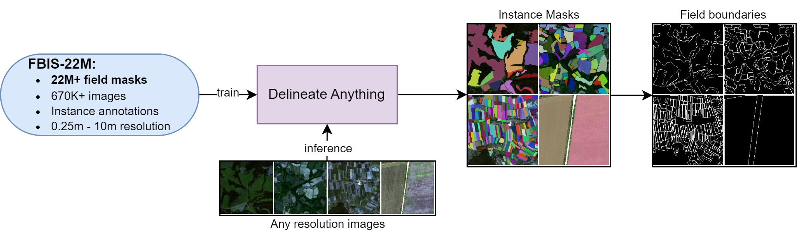
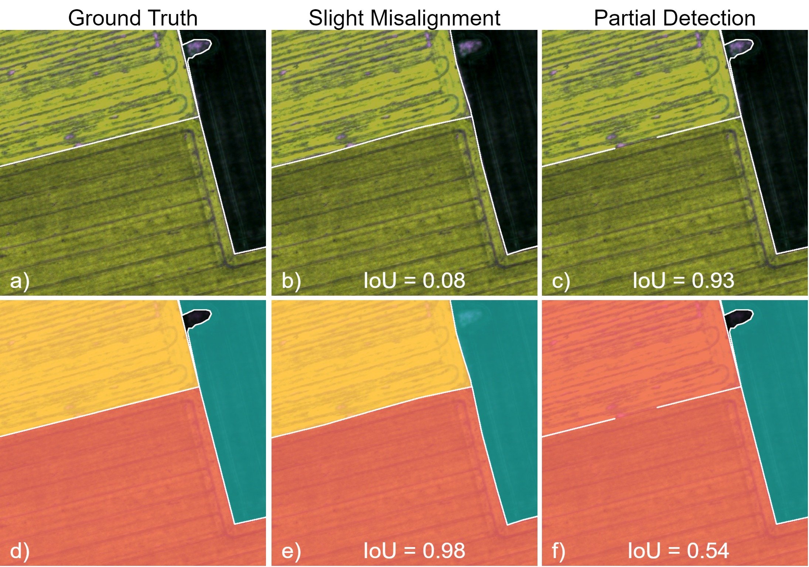
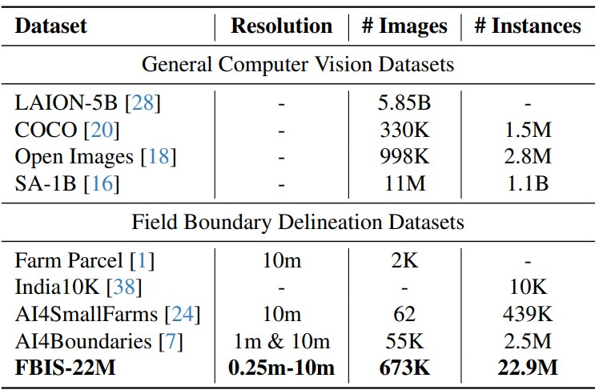
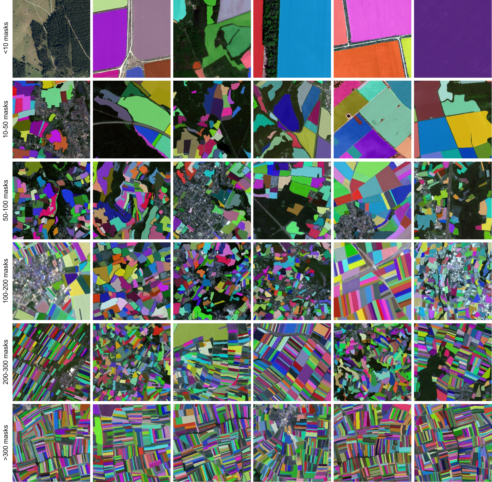
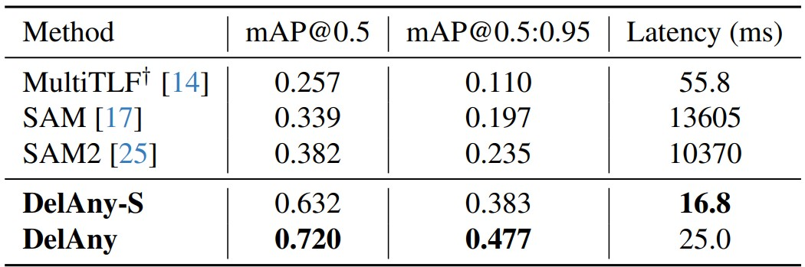
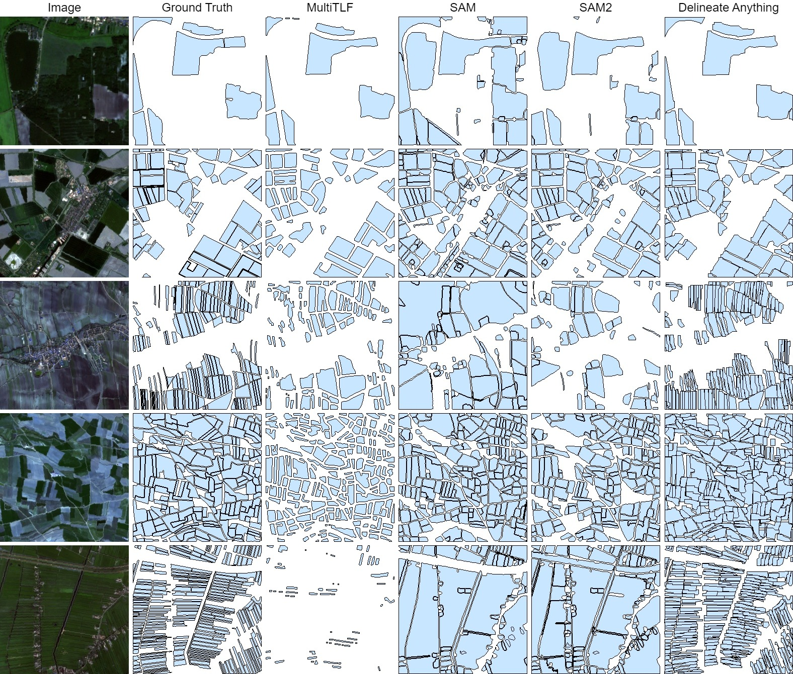
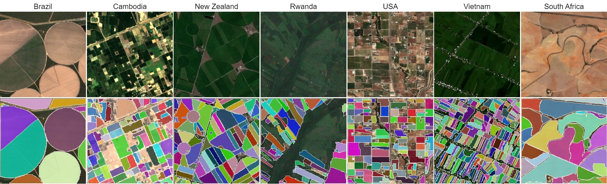

Delineate Anything: Resolution-Agnostic Field Boundary Delineation on Satellite Imagery
Mykola Lavreniuk1, 2,
Nataliia Kussul3,
Andrii Shelestov2, 4,
Bohdan Yailymov2,
Yevhenii Salii2, 4,
Volodymyr Kuzin2, 4,
Zoltan Szantoi1
1 European Space Agency,
2 SRI NASU-SSAU,
3 University of Maryland,
4 Igor Sikorsky Kyiv Polytechnic Institute

Figure 1. Workflow of the Delineate Anything model for field instance segmentation and field boundary extraction from arbitrary resolution satellite imagery, trained on our large-scale Field Boundary Instance Segmentation dataset (FBIS-22M), containing 22M field boundaries.
Abstract
The accurate delineation of agricultural field boundaries from satellite imagery is vital for land management and crop monitoring. However, current methods face challenges due to limited dataset sizes, resolution discrepancies, and diverse environmental conditions. We address this by reformulating the task as instance segmentation and introducing the Field Boundary Instance Segmentation - 22M dataset (FBIS-22M), a large-scale, multi-resolution dataset comprising 672,909 high-resolution satellite image patches (ranging from 0.25 m to 10 m) and 22,926,427 instance masks of individual fields, significantly narrowing the gap between agricultural datasets and those in other computer vision domains. We further propose Delineate Anything, an instance segmentation model trained on our new FBIS-22M dataset. Our proposed model sets a new state-of-the-art, achieving a substantial improvement of 88.5% in mAP@0.5 and 103% in mAP@0.5:0.95 over existing methods, while also demonstrating significantly faster inference and strong zero-shot generalization across diverse image resolutions and unseen geographic regions.
Methodology
Our contributions are threefold:
- A novel task formulation of field boundary detection as an instance segmentation problem, addressing the inherent limitations of semantic segmentation for this task.
- A new, large-scale, multi-resolution satellite imagery dataset for robust field boundary delineation.
- A resolution-agnostic model that significantly outperforms current state-of-the-art methods for field boundary detection, while exhibiting superior inference speed and strong zero-shot generalization across diverse resolutions and geographic locations.

Figure 2. Comparison of task formulations and evaluation metrics for field boundary delineation. The top row illustrates field boundary masks (semantic segmentation), while the bottom row shows individual field masks (instance segmentation). Ground truth examples are shown in (a) and (d). Slightly misaligned boundaries result in a boundary IoU of 0.08 (b) and an instance IoU of 0.98 (e). Partially detected boundaries yield a boundary IoU of 0.93 (c) and an instance IoU of 0.54 (f).
Field Boundary Instance Segmentation - 22M (FBIS-22M) dataset

Table 1. Comparison of FBIS-22M with existing datasets. The table compares FBIS-22M with general computer vision datasets and existing field boundary delineation datasets based on satellite imagery, highlighting FBIS-22M’s resolution range and scale.

Figure 3. Examples of field boundary instance segmentation from our FBIS-22M dataset. The FBIS-22M dataset contains over 670K+ multi-resolution satellite images (ranging from 0.25m to 10m) and 22M+ field instance masks. Images are grouped by the number of fields to demonstrate the dataset's diversity and scalability, and a challenge of separating fields across varying resolutions and geographies.
Results

Table 2. Quantitative comparisons on the FBIS-22M test set. We compare our DelAny model and its smaller variant (DelAny-S) against other methods. †: Models retrained on our FBIS-22M dataset for fair comparison. Latency (ms) represents the total time required to generate field boundaries. Best results are in bold.
Visualizations

Figure 4. Qualitative results on the FBIS-22M test set. Delineate Anything is compared to MultiTLF, SAM, and SAM2. For a fair comparison, the MultiTLF model was retrained using our FBIS-22M dataset. Different samples are carefully selected and presented, varying in the size and density of the fields, to better illustrate the performance of each model under diverse conditions.

Figure 5. Qualitative results of zero-shot predictions. Delineate Anything is applied to geographic regions with different climates, terrains, and agricultural practices, highlighting its field boundary delineation capabilities outside the training data.